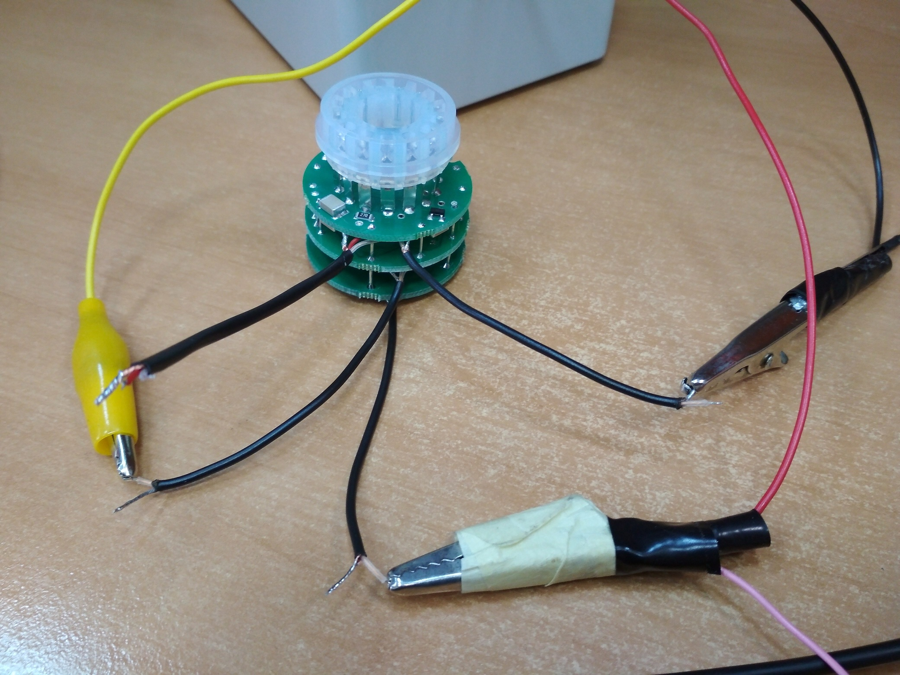
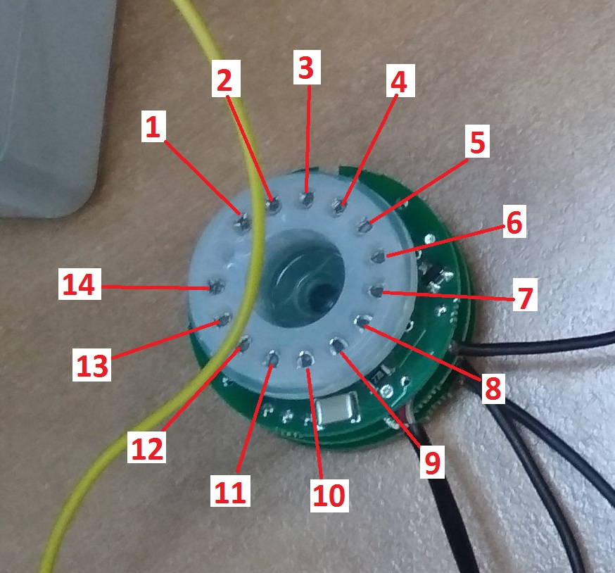

Проверка умножителя 1123
Собрать схему для проверки. Взять пульт для умножителей ДКС-АТ1123, подключить к источнику питания Б5-78/6
(подаем напряжение 5,9-6,0 В). К выводам пульта подключаем осциллограф и умножитель.

Вид сигнала на осциллографе:

Подключение умножителя к пульту: 
Далее статическим вольтметром С509 измеряем напряжение на каждом диноде. 
Показания напряжений на динодах умножителя 1123(допускается отличия в измерениях ± 20В, при сохранении закономерности):
- 770В
- 950В(800В при переключении управляющим сигналом)
- 720В
- 630В
- 540В
- 390В
- 150В
- 0В
- 0В
- 290В
- 490В
- 580В
- 680В
- 0В
Если показания сильно отличаются или не происходит падения напряжения при переключении в другой режим, то проверяем правильно ли все запаяно и исправность всех элементов.